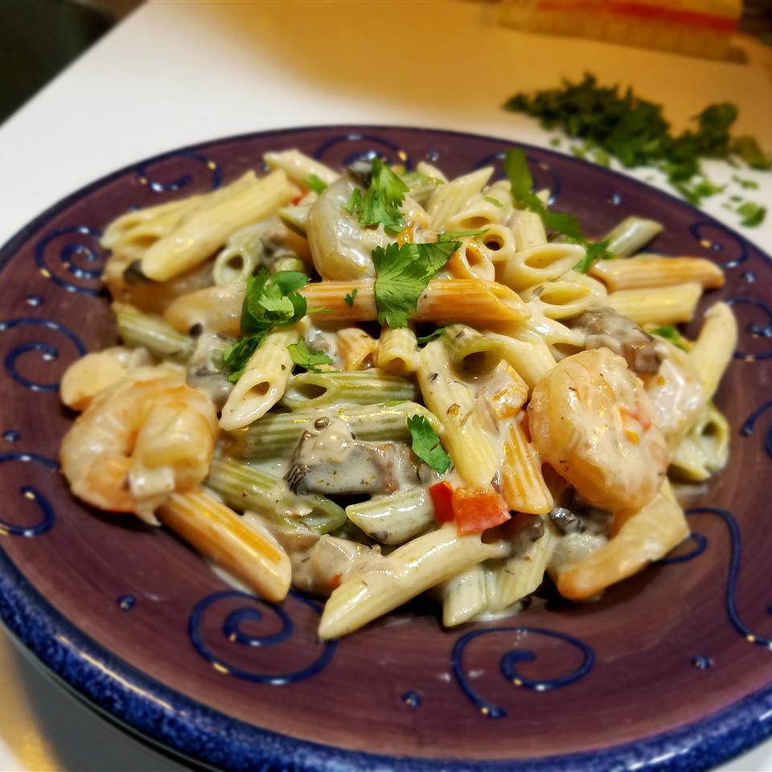

Return Home

Yummy shrimp in an Alfredo sauce, with portobello mushrooms and red peppers
Easy and fast recipe that caters to a wide variety of indviduals. Marinated with red and green peppers along with fresh paremsan cheese makes for excellent leftovers as well.
Can also add any meat option you want including chicken, scallops, or other seafoods. A perfect recipe for the entire family or guests!
Ingredients
12 ounces penne pasta
1/4 cup butter
2 tablespoons extra-virgin olive oil
1 onion, diced
2 cloves garlic, minced
1 red bell pepper, diced
1/2 pound portobello mushrooms, diced
1 pound medium shrimp, peeled and deveined
1 (15 ounce) jar Alfredo sauce
1/2 cup grated Romano cheese
1/2 cup cream
1 tablespoon cayenne pepper, or more to taste
Salt and pepper to taste
1/4 cup chopped parsley
Steps
Bring a large pot of lightly salted water to a boil. Add pasta and cook for 8 to 10 minutes or until al dente; drain.
Meanwhile, melt butter together with the olive oil in a saucepan over medium heat. Stir in onion, and cook until softened and translucent, about 2 minutes. Stir in garlic, red pepper, and mushroom; cook over medium-high heat until soft, about 2 minutes more.
Stir in the shrimp, and cook until firm and pink, then pour in Alfredo sauce, Romano cheese, and cream; bring to a simmer stirring constantly until thickened, about 5 minutes. Season with cayenne, salt, and pepper to taste. Stir drained pasta into the sauce, and serve sprinkled with chopped parsley.
Nutrition Facts
Per Serving: 707 calories; protein 28.4g; carbohydrates 50.6g; fat 45g; cholesterol 201.5mg; sodium 1034.5mg.